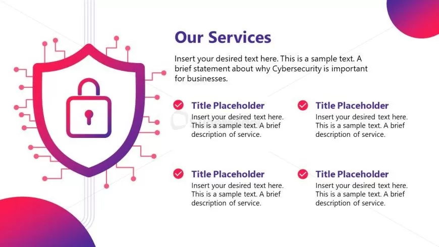

Top 10 Cybersecurity Tips Everyone Should Follow
Posted on July 5, 2025 by Admin

Cybersecurity is no longer optional in the digital world. Whether you're a student, employee, or
entrepreneur, keeping your data secure is your responsibility. Here are the top 10 tips to help protect your
online identity and devices:
- Use Strong & Unique Passwords: Avoid using common passwords like 123456 or your name.
Use a mix of upper/lowercase, numbers, and symbols.
- Enable Two-Factor Authentication (2FA): Always use 2FA wherever available. It adds an
extra layer of protection beyond just your password.
- Keep Software Updated: Outdated apps and OS can have vulnerabilities. Turn on
auto-update for security patches.
- Be Aware of Phishing Scams: Don’t click on suspicious links in emails or SMS. Always
verify the sender before acting.
- Use Antivirus & Firewall: These tools detect and block malware, viruses, and dangerous
websites.
- Secure Your Wi-Fi Network: Change the default router password and use WPA3 encryption
if available.
- Backup Your Data: Always keep your important files backed up in the cloud or on an
external hard drive.
- Use VPN on Public Wi-Fi: Don’t access sensitive data over open networks without using a
secure VPN.
- Log Out When Not in Use: Especially on public or shared devices, logout properly from
your accounts.
- Stay Updated with Cyber News: Cyber threats evolve daily. Follow blogs (like this one
😎) to stay informed.
Start applying these tips today to build your digital safety foundation. Remember: security is not a one-time
action — it’s a habit.
What is Phishing? How to Avoid It
Posted on July 6, 2025 by Admin

Phishing is a type of cyberattack where attackers trick you into giving up personal or financial information.
It usually comes through fake emails, SMS, or websites that look real but are created by hackers.
⚠️ How to Identify Phishing:
- Urgent or threatening language ("Your account will be locked!")
- Spelling mistakes and weird email addresses
- Links that look real but take you elsewhere
- Attachments or prompts asking for sensitive info
✅ How to Stay Safe:
- Don’t click links in emails unless you trust the source
- Use spam filters and antivirus software
- Double-check URLs before entering info
- Report suspicious emails to your provider
Phishing is common but avoidable. Awareness is your first line of defense.
How to Create Strong Passwords That Are Hard to Hack
Posted on July 7, 2025 by Admin

Weak passwords are one of the top reasons for cyber breaches. Hackers use tools that can guess thousands of
passwords per second. Here's how to create a strong, secure password:
💪 Strong Password Guidelines:
- Use at least 12 characters
- Include uppercase, lowercase, numbers, and symbols
- Avoid dictionary words or personal info
- Use a passphrase like:
!SecureM0nkey42#
🔐 Bonus Tips:
- Use a password manager (e.g., Bitwarden, LastPass)
- Never reuse the same password
- Enable 2FA wherever possible
Your password is your first lock. Make it unbreakable.
5 Free Cybersecurity Tools Every Beginner Should Try
Posted on July 8, 2025 by Admin

Want to explore cybersecurity hands-on without spending a rupee? Here are 5 free tools to get started:
- Wireshark: Analyze network packets and detect suspicious activity
- VirusTotal: Scan files and URLs with 70+ antivirus engines
- Kali Linux: Ethical hacking distro loaded with tools
- Burp Suite Community: Web vulnerability scanner
- Bitdefender Free Antivirus: Lightweight, real-time protection
These tools are powerful and beginner-friendly. Explore and practice, but always ethically!
Safe Browsing: Do's and Don'ts
Posted on July 9, 2025 by Admin

✅ Do’s:
- Use secure websites (https://)
- Keep your browser and plugins updated
- Use privacy mode when browsing sensitive sites
- Use an ad blocker and anti-tracking extension
❌ Don’ts:
- Don’t click random popups
- Don’t enter credentials into untrusted sites
- Don’t download unknown files
- Don’t save passwords in browser
Stay alert and surf smart to protect your digital life.
Recent Cyber Attacks That Shocked the World
Posted on July 10, 2025 by Admin

Here are some of the biggest attacks in recent years that exposed millions:
- Colonial Pipeline (2021): A ransomware attack halted oil supply in the US
- Facebook Data Leak (2021): Data of 500 million users exposed
- SolarWinds Hack: A massive supply-chain attack on US government systems
- WannaCry (2017): Global ransomware that spread to 150+ countries
These incidents show why cybersecurity matters — even at the highest level.